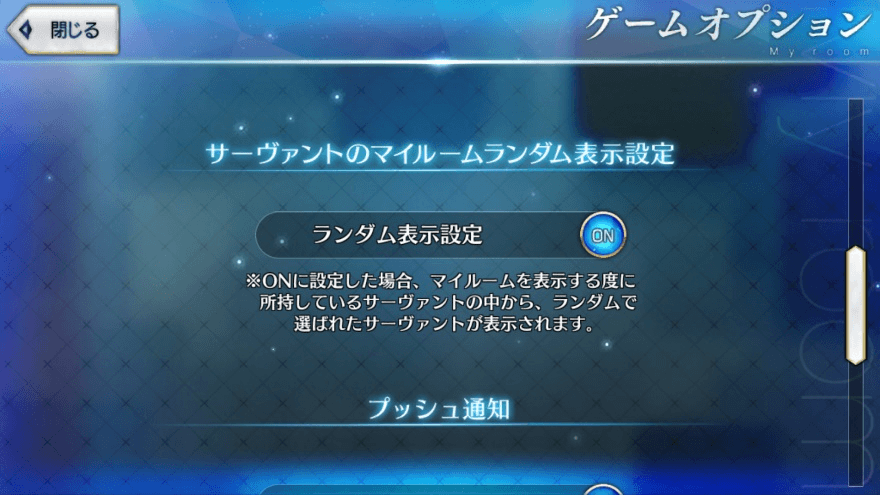

- 5/26
- 【來自迦勒底廣報局】關於5月下旬～6月上旬的遊戲更新
非常感謝各位使用「Fate/Grand Order」。
來自迦勒底廣報局，告知關於2017年5月下旬～6月上旬預定的下次遊戲更新。
以下介紹更新後，反映的更新內容裡，具有代表性的更新內容。
▼新功能的追加
・追加可隨機設定在顯示MyRoom的Servant的功能。

▼UI的改善
・每點擊戰鬥前的TIPS，會隨機切換成其他内容。
・在AP不足狀態選擇關卡，回復AP後會移動到選擇完關卡的狀態。
・在靈基變還中，對Servant及概念禮裝的各圖示，顯示代表限界突破狀態的圖示。
・在支援選擇畫面中，對Servant的技能圖示，追加顯示可判別強化狀態。
以上，為預定5月下旬～6月上旬實施的下次遊戲更新的主要內容。
今後也請多多指教「Fate/Grand Order」。